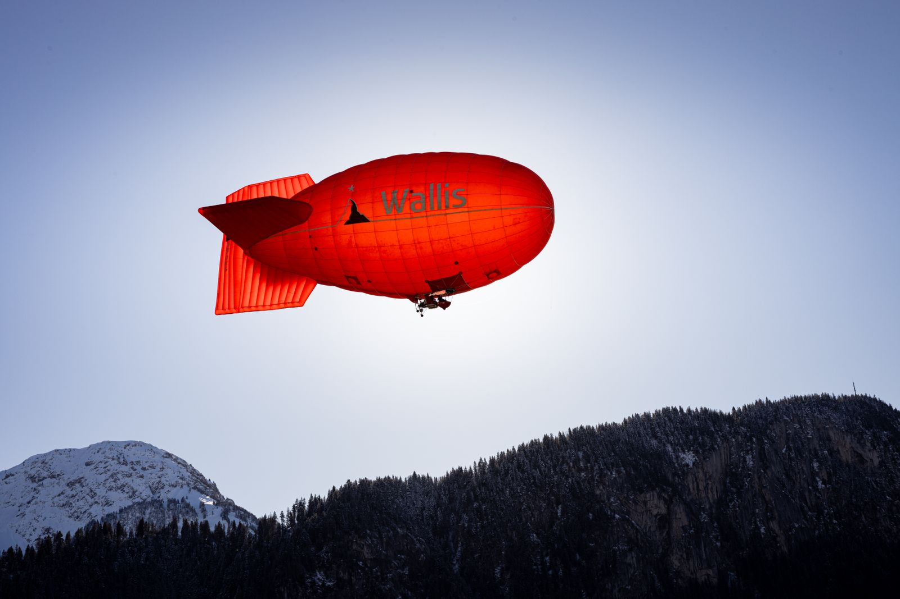

The altitude that died on paper
Client
Meridian HAPS Consortium — telecoms
Study
S.01 · Lift & mass budget audit
Year
2023
Deliverable
Budget + revised float plan

The brief
A telecoms consortium wanted a fixed stratospheric station: 21 km float altitude, a 60,000 m³ envelope, and a 900 kg communications payload, holding station over mid-latitudes. The altitude had been chosen first — it was in the funding deck — and the airship was expected to fit underneath it.
The decisions
The budget took one afternoon to run and one meeting to ruin. Interpolating Table 1, air at 21 km is about 0.0767 kg/m³; net lift is 0.0661 kg/m³; the 60,000 m³ envelope grosses roughly 3,970 kg. After the printed allowances — envelope and hull 46%, propulsion and energy 24%, systems and reserve 10% — useful lift is about 790 kg: less than the payload alone, before a single margin.
Two honest options were priced. Descend to 18.5 km and grow the envelope to 85,000 m³: gross ≈ 8,320 kg, useful ≈ 1,660 kg — payload plus real margin. Or stay at 21 km on 120,000 m³, rejected on ground-handling and cost. The consortium took the descent.
The outcome
The programme proceeded to preliminary design at 18.5 km on the larger envelope. The coverage penalty of the lower float was real and was accepted in the open, in the same document that carried the lift budget — not discovered two years later in a hangar. The funding deck was reprinted. Altitudes chosen by decks usually are.
“The consortium arrived with an altitude and a brochure. Katrin sent back a budget. We descended two and a half kilometres, grew the envelope, and the programme is still alive — which the brochure version would not have been.”